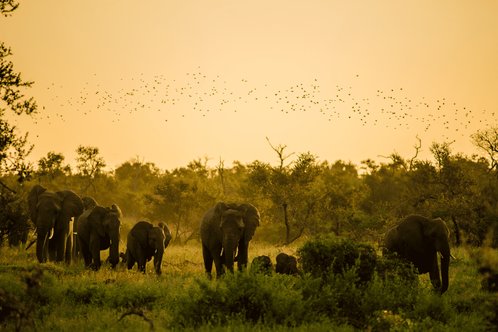
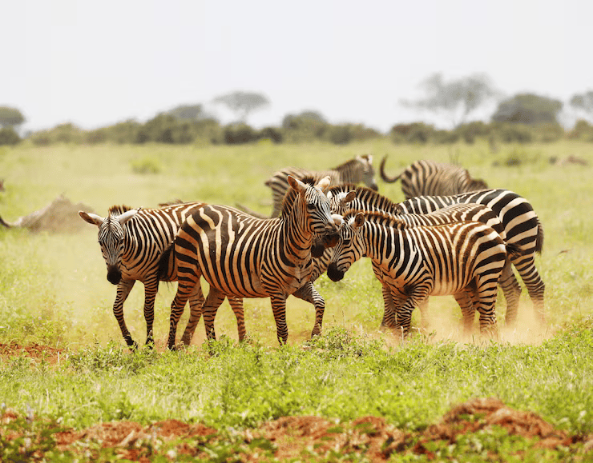
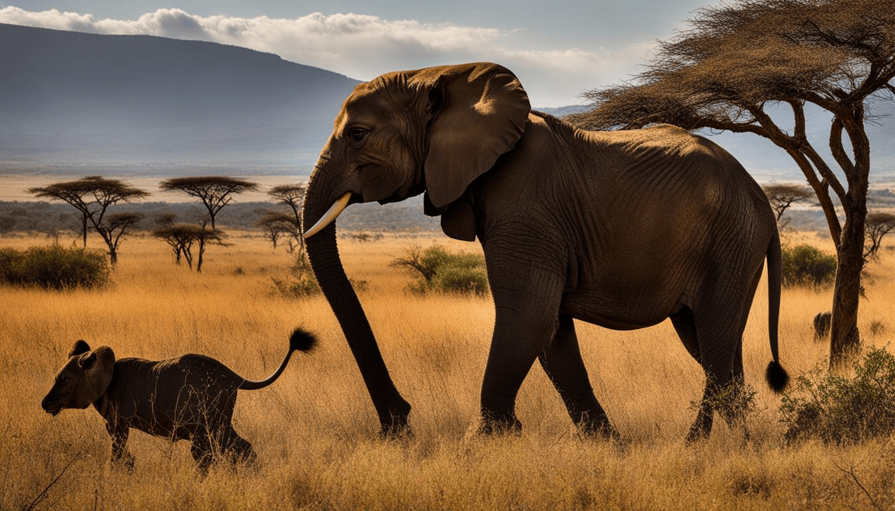
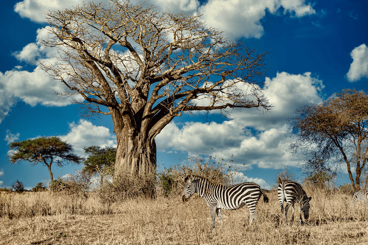
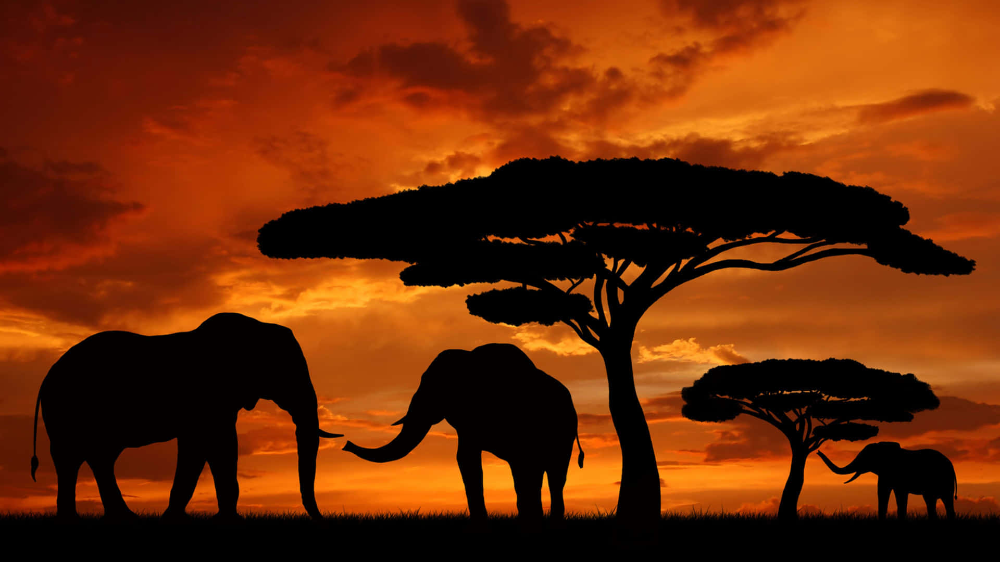

Visão Geral Resumida
Localização e Geografia
- Segundo maior continente do mundo (só perde para a Ásia).
- Possui 54 países reconhecidos.
- Dividido geralmente em cinco regiões: Norte, Oeste, Leste, Centro e Sul.
-
Destacam-se o Deserto do Saara, a Floresta do Congo,
o Rio Nilo (o mais longo do mundo) e a Savana africana.





Diversidade Cultural
- Extremamente diversa: mais de 2 mil línguas faladas.
- Ricas tradições culturais, espirituais e artísticas.
- O conceito de Ubuntu ("eu sou porque nós somos") é um exemplo de filosofia africana baseada na coletividade.
História
- Berço da humanidade: fósseis humanos mais antigos foram encontrados lá.
- Civilizações antigas como Egito, Reino de Axum, Império do Mali e Império Songhai.
- Sofreu intensamente com a colonização europeia (século XIX), o que deixou profundas cicatrizes sociais, econômicas e políticas.
- A maioria dos países só se tornou independente no século XX.
Principais estados
A África tem 54 países reconhecidos internacionalmente, mas quando você fala em principais
Estados geralmente se refere aos mais influentes ou relevantes em termos de economia,
população, território ou importância política. Aqui estão alguns deles, divididos por critérios:
-
Pela economia (PIB mais alto):
Nigéria – Maior economia africana, grande produtora de petróleo.
África do Sul – Forte industrialização e mineração.
Egito – Economia diversificada, destaque no turismo e no comércio.
Argélia – Rico em petróleo e gás natural.
Quênia – Centro diplomático e tecnológico na África Oriental.